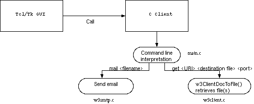
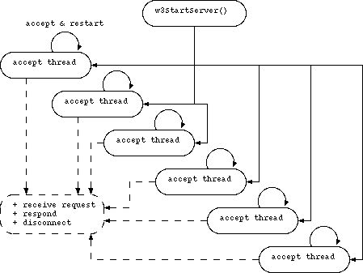

Report on CNS 2000 programming project (C WWW browser/server)
Note: This is the original report of the programming project at University
that this software emerged from. Note that the Tcl/Tk part is not included
and that the link to its documentation also doesn't work. Please also note
that Liuben Tonev's email is not current, I'm afraid I do not have a current one.
Even though I praise it below, I switched from emacs which I used years ago to
VIM ;-)
Group 18, Liuben Tonev and Christian Gosch
This report consists of two parts. The first is the one you are
looking at now, the second one is the code documentation and
how-to-use manual (quick start and how to compile) in server/doc/html and
client/doc/html directories.
For understanding the code, we recommend reading both parts.
If you want, go on reading about the browser or the server directly.
Getting it running quickly
Client / Browser
- Follow the compile instructions in the code documentation
- Go to the respective
browser subdirectory and start browser.tcl
Server
Just follow the compile instructions in the code documentation
Work contributions from each group member
Group members were Liuben Tonev and Christian
Gosch.
- Tcl/Tk Browser and documentation
- Cache mechanism and documentation
- Mail frontend
- Client C program and documentation
- Server C program and documentation
- This file
- How-to-use manual
Used Software
- Operating systems: Linux
2.2.13 and Solaris
The C part of the software was written entirely under Linux.
- GNU C compiler (gcc and egcs-2.91.66)
- GNU make 3.77
- GNU autoconf 2.13 / autoheader
- flex 2.5.4 lexical analyser generator
- Doxygen 0.49-991003 by Dimitri van
Heesch
- GNU Emacs 20.4.1 (there can be
only one)
- Tcl/Tk 8.2

The browser consists of two parts: The GUI written in Tcl/Tk and the
actual client program written in C.
The GUI takes commands from the user and uses the client program to
retrieve html files from the URI given by the user.
The advanced version downloads all images referenced in the html file
and corrects the downloaded html file, in the first version using the 'correct' program.
Correct is basically a lexical analyser generated by flex.
Correct is no longer used, this work is now done by the image analyser
in client/src/img.lex.
In the following description, all functions can be looked up in the
code documentation in doc/html.
The client program
Basic version
The main function (main.c) reads the command line parameters and hands
them over to w3ClientDocToFile(). This function takes the
URI, a filename of the file to write the received data to, and a port
number (for details, refer to the code documentation in
doc/html).
w3ClientDocToFile() uses w3ParseURI() to get
a w3URI structure out of the URI string.
Then, w3ClientGetDocument() is used to retrieve the
document from the server. There are facilities to retrieve documents
multi-threaded, but, since the GUI calls a client program for any
requested document, these facilities are not used.
w3ClientGetDocument() uses the lower level functions
w3SendData() and w3ReceiveData() to request
and receive the document.
The connection is established using w3ClientConnect() and
deleted by w3ClientDisconnect().
These lower level functions use the known C socket interface to the network.
Standard version
Changes were made only to the Tcl code.
Advanced version
The main change to the previous version is the handling of downloaded
files.
A page is not simply stored but also analysed to find image tags and
automatically download the images. The images are stored in a simple cache
structure.
Directly downloaded files are stored in a cache directory (standard is
cache) and image files subsequently downloaded are stored
in subdirectories of cache which resemble the URI path of
the images.
For example, www.animals.org/dog/cat/mouse.html is stored
in the given destination file (still part of the command line to
client) AND in
the cache subdirectory (which is specified in client/src/w3clientconfig.h). The downloaded file is scanned for image tags and the
corresponding images are downloaded and stored in the cache directory, in this example that could be
cache/www.animals.org/pictures/dog.gif
The directly downloaded files are stored flatly in cache/, e.g. as
cache/www.animals.org_index.html
The slashes are replaced by underscores. This CAN lead to name clashes but that is neglected for this program. In a release version,
another mechanism would have to be used; since this program is free
and works fine for me, I am happy with it. It is, however, easy to
change this behaviour when needed.
This behaviour can be switched off by defining or
undefining W3CLIENT_CREATE_CACHE. If this variable is
undefined, only the downloaded images are stored in the way described
above.
All this caching is done by w3ClientDocToFile() and the
related functions in w3client.c.
Handling of HREF Tags in Downloaded HTML Documents in the Advanced
Version
The file is scanned for HREF tags and relative tags (like href="otherfile.html"...)
are replaced by absolute ones (like
href="http://www.server.com/otherfile.html"...).
This is done to enable the user interface to make use of hyperlinks
which would otherwise be handles as local files.
The Analyser Code
The replacement of img and href tags is done
by an analyser which is created using flex. The source
code for flex can be found in advanced/client/src/img.lex.
In case it becomes necessary to change and rebuild the analyser, call
flex -i img.lex
in the source directory. Of course you need the flex package to do this.
Sending Mails With client
The advanced version of client is capable of sending
emails through an SMTP server. The code added for sending emails can
be found in w3smtp.c.
The functions used to send mails are w3SendMail() and
w3SendMailFile(). The latter is used by the
main() client function to send mails.
w3SendMailFile() reads the needed data from a file and
calls w3SendMail().
The file given to the client program MUST have the
following structure:
First line: Recipient
Second line: Sender
Third line: mailer
Fourth line: port number on which the mailer accepts connections
The following lines contain the mail body, including ALL headers the sender wants to be sent (including sender and recipient
headers).
This description can also be found in the code documentation for w3SendMailFile().

Standard version
The server operates in multiple threads. The current version runs six
accepting threads in parallel, but this number can be changed at will
in the file w3server.c in function
w3StartServer() simply by changing the loop which starts
the threads (how to do this is obvious and needs no further
description).
The main () function calls the function
w3StartServer() which sets up everything to run the
server:
- Set up 5 threads (plus the main thread) to accept incoming
connections
- Every thread waits for a connection, starts a new thread as soon
as a connection was accepted and then receives the request
- Every thread disconnects after the response was sent
All send and receive operations are wrapped by convenience functions,
which are explained in the code documentation.
Advanced version
Standard and advanced version are the same program except for the
ability of the advanced version to execute files on the server machine. No changes were
needed in order to make the server to send any file requested (other
than .html).
Executing binaries on the serverside
Thinking of CGI, the implementation of something similar was started
(but not yet finished).
The server is capable of executing files in the binary directory,
which is defined in w3server.h as
HTDOC_BIN_BASE. When a file in this directory is
requested, it is instead executed and the standard output of that
executable (be it a binary or a shell script) is sent to the
client.
If you set the default HTDOCS directory to the htdocs directory delivered with this package, and you are getting this documentation from our server, this should give an example.
Program arguments are yet to be implemented (using the
"prgname?arg1=..." syntax). All the server can do with this feature
yet is executing files without arguments.
See also the code documentation for the advanced server, function w3ServerSendFile().
Error handling
The server handles errors in client requests by responding with an
error page. The code for the creation of the error pages can be found
in w3html.c (w3HTMLGenerateError()).
An example error page can be seen here.
Problems encountered (C-part and Tcl/Tk-part)
- The test platform (logic.levels.unisa.edu.au) was often at the limit of its resources (meaning the memory was exhausted) and made the browser as well as the server crash.
- More bug reports (Tcl code)